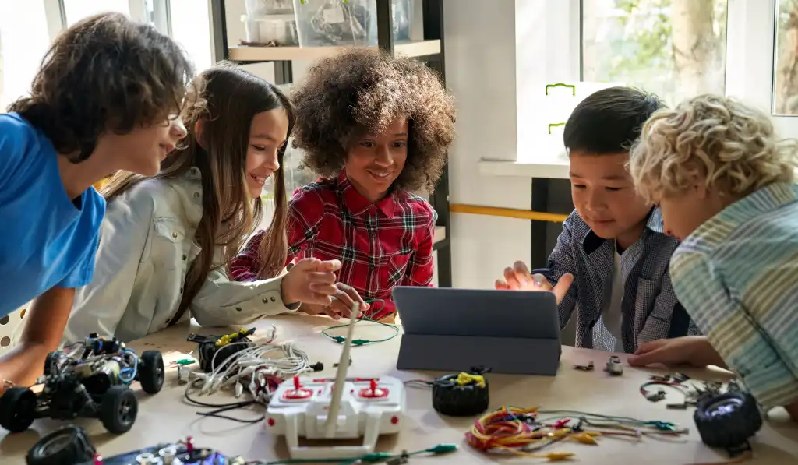

About Pi and Beads
Pi and Beads is an innovative learning program designed to empower kids with skills in abacus math, coding, and artificial intelligence (AI). The name blends 'Pi'—symbolizing the mathematical foundation—with 'Beads,' representing the abacus, a hands-on tool for learning. Our mission is to provide a holistic educational experience that combines traditional math techniques with modern tech skills, fostering creativity and critical thinking.
Targeted at children aged 6-12, the program offers an engaging curriculum delivered through interactive lessons, hands-on tools, and fun activities. Whether your child is new to these subjects or looking to deepen their skills, Pi and Beads provides a supportive environment to explore and grow.
